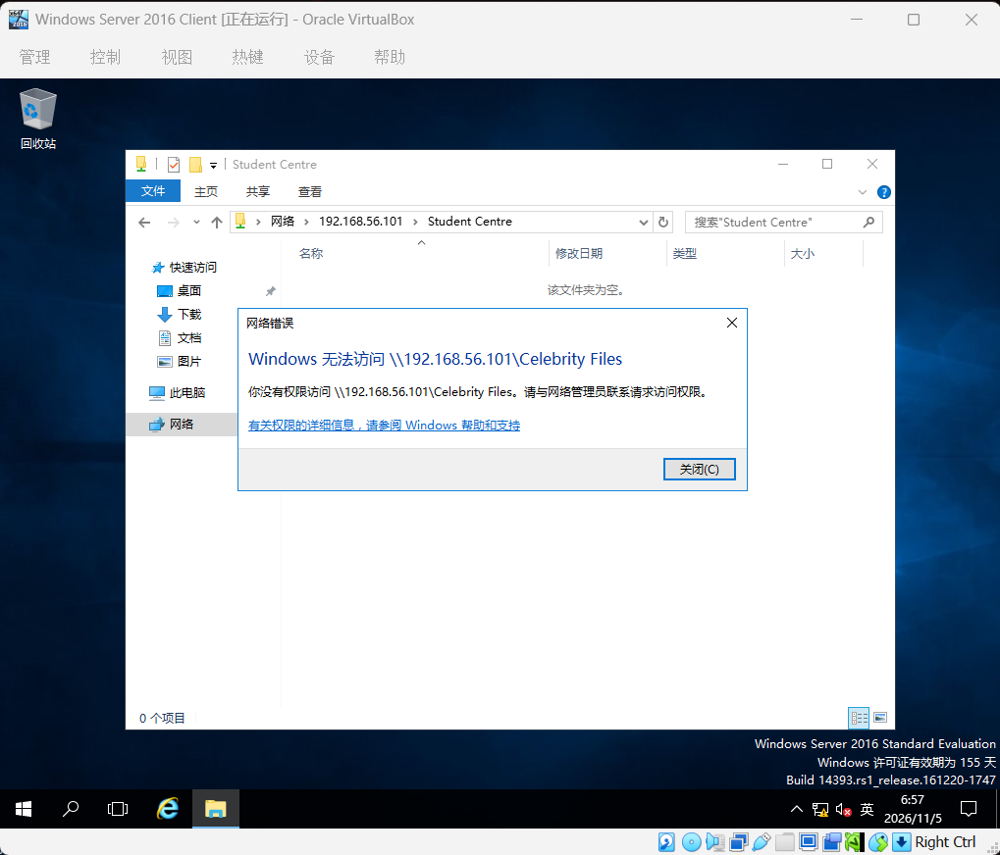
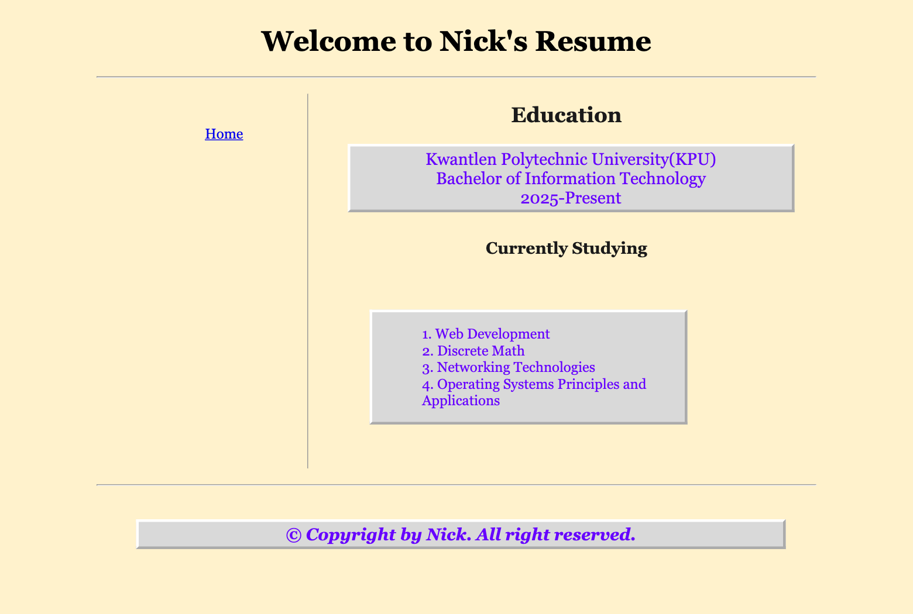

192.135.250.180/29
Original /24 → new /29
- Network
- 192.135.250.176
- Broadcast
- 192.135.250.183
- First usable
- 192.135.250.177
- Last usable
- 192.135.250.182
- Subnets / hosts per subnet
- 32 / 6
Browse my lab screenshots, run a SQL example, or download the Java simulation and compare its output.
I used a Windows Server 2016 lab to organize accounts, inspect delegation and control access to shared folders through security groups.
Created and reorganized organizational units (OUs), inspected Account Operators permissions on an OU, and nested the Agents, Celebrities and Students groups in Common Access. I then checked shared-folder access using representative lab accounts.
The client in this exercise was another Windows Server 2016 VM. The domain and user roles shown below belong to the lab.



Screenshots from my INFO 2416 Assignment 3 report.
I configured Apache on Ubuntu and tested it from a Kali client, using SSH, local hostname mapping and a self-signed certificate.
Connected the two VMs, configured certificate paths, enabled the SSL site and saved a configuration diff. The client received four ping replies. After Apache restarted, Firefox on the Kali VM loaded Ubuntu’s default page over HTTPS.


Syntax OK and a ServerName warning.
The syntax check passed. Apache also warned that it could not determine its fully qualified domain name because the global ServerName was unset. The report records a successful restart with that warning still present.
To clear the warning, I would set a global ServerName matching the lab hostname and rerun the syntax check. Firefox’s separate certificate warning came from the self-signed certificate. I accepted a local exception to inspect the HTTPS page.
Screenshots from my INFO 2411 self-signed SSL lab on two VirtualBox VMs.
I calculated network and broadcast addresses, usable ranges and host counts for six IPv4 subnetting problems. Here is one example.
Original /24 → new /29
In a separate guided activity, I added a PC to a supplied Cisco topology, entered static IPv4 settings and inspected OSI and Ethernet PDU details in Simulation mode.


From my INFO 1212 subnetting worksheet and my lab screenshots of a course-supplied Cisco topology.
I followed IPv4 subnetting with coursework on wireless LANs, gateway availability and IPv6.
The wireless activity focused on connecting clients to a WLAN. In first-hop redundancy, another router can take over the same gateway address if the active router fails. Separate Cisco Packet Tracer exercises covered IPv6 addressing.
I wrote the SQL definitions for customers, properties, bills and the records connecting them. A buyer can have several purchases, and a bill can have several installments.

Buy uses a composite key of customer, property and bill. Payment uses the bill ID and installment number together, so each bill can start at installment 1. A payment row records a due date and amount.
My coursework supplied the table definitions. The AI-assisted example below runs them unchanged in SQLite, with foreign keys enabled and fictional rows for one buyer, one property and one bill. The original coursework does not name a database engine.
INSERT INTO Payment (BID, Number, DueDate, Amount) VALUES
(501, 1, '2026-02-01', 500.00),
(501, 2, '2026-03-01', 700.00);The query follows the purchase to its buyer and property, then looks up both installments by bill ID.
SELECT c.Name AS buyer, p.Street AS property, b.BillID AS bill,
i.Number AS installment, i.DueDate AS due,
printf('%.2f', i.Amount) AS amount
FROM Buy AS b
JOIN Customer AS c ON c.SSN = b.CustomerSSN
JOIN Property AS p ON p.PNumber = b.PropertyNum
JOIN Payment AS i ON i.BID = b.BillID
ORDER BY b.BillID, i.Number;| Buyer | Property | Bill | Installment | Due | Amount |
|---|---|---|---|---|---|
| Avery | Sample Lane | 501 | 1 | 2026-02-01 | 500.00 |
| Avery | Sample Lane | 501 | 2 | 2026-03-01 | 700.00 |
Save the Lab 3 schema as database-schema.sql. In the same folder, open sqlite3 :memory: and paste the commands below to reproduce the two rows.
.headers on
.mode column
.read database-schema.sql
PRAGMA foreign_keys = ON;
BEGIN TRANSACTION;
INSERT INTO Customer (SSN, Name) VALUES ('DEMO-A', 'Avery');
INSERT INTO Property (PNumber, City, Street, PostalCode)
VALUES (101, 'Demo City', 'Sample Lane', 'DEMO');
INSERT INTO Bill (BID, IssueDate, TotalPrice) VALUES (501, '2026-01-05', 1200.00);
INSERT INTO Buy (CustomerSSN, PropertyNum, BillID) VALUES ('DEMO-A', 101, 501);
INSERT INTO Payment (BID, Number, DueDate, Amount) VALUES
(501, 1, '2026-02-01', 500.00),
(501, 2, '2026-03-01', 700.00);
COMMIT;
SELECT c.Name AS buyer, p.Street AS property, b.BillID AS bill,
i.Number AS installment, i.DueDate AS due,
printf('%.2f', i.Amount) AS amount
FROM Buy AS b
JOIN Customer AS c ON c.SSN = b.CustomerSSN
JOIN Property AS p ON p.PNumber = b.PropertyNum
JOIN Payment AS i ON i.BID = b.BillID
ORDER BY b.BillID, i.Number;Three of us also modeled Moodle coursework and grades. These two diagrams come from that team project.
A course project that combines vehicle and trip inputs, a simple fuel model, price comparisons and a saved text report.
Four classes represent the simulation, car, city and gas station. Fixed-size object arrays hold the choices. Console prompts collect the distance, passengers, weather, road conditions, air conditioning, luggage and budget.
Random traffic lights and stop signs add to the model’s fuel estimate. The program samples two different stations from three entered stations, compares prices for the vehicle’s fuel grade, checks the budget and exports the result with PrintWriter.
In the run shown below, the car needs 5.60 L. The program estimates a trip cost of CAD 12.55, checks the entered budget and reports the shortfall.

The download contains the four original Java files, a short run guide and sample input/output. In the downloadable example, a 75 km trip uses 10.64 L at CAD 2.24/L. The estimated cost is CAD 23.83, leaving CAD 26.17 of a CAD 50 budget. Traffic is randomized, so repeated runs can differ.
I would validate non-numeric inputs and let the driver compare all three entered stations.
My INFO 2313 individual project includes the four Java files and the original report. The download pairs those files with a run guide and an additional sample trip.
I wrote four HTML pages for Home, About Me, Education and Project, using a shared CSS file. The home page linked them together and included a small JavaScript interaction.

The browsable copy omits my old résumé, personal media and contact information.
Clicking a button on the home page replaced a prompt with a bold sample number. This is the handler from that page.
function myFunction() {
document.getElementById("demo").innerHTML = "<strong> 123.456.7890 </strong>";
}